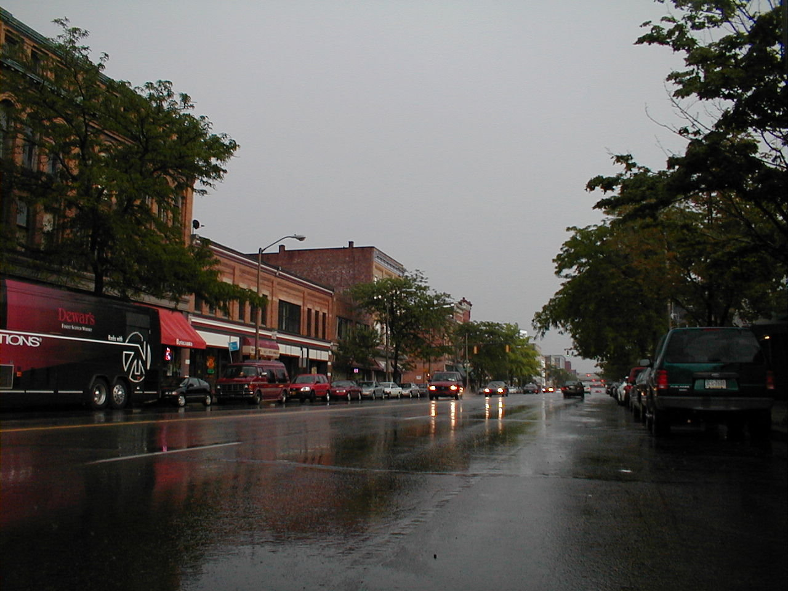

Day 40: June 21, Erie, PAPrevious Day - Home - Next Day Photo of the DayA rainy day on the streets of Erie, PA. Keegan's LogDay 40: June 21, Erie, PA Mileage: 4.19 milesWeather: Cool, Thunderstorms Today was our fifth rest day, this time in Erie, Pennsylvania. I used the time to sleep in while dad went for a walk, the two of us then wandered around town looking for a bike shop. The first one sold only BMX bikes, but they sent us to one that had a good selection of road bike stuff. I got a half dozen spokes for my back wheel, but I won't be too heartbroken if I never have to use them. I also got some nice American flag handlebar tape, a good commemoration of the trip. I spent the next few hours replacing my old, mangled tape with the new tape and cleaning up my bike, then headed to the laundromat a half mile away. The first thunderstorm hit just as the dryers were finishing, so I ended up walking back in the rain. The rain fell for a few hours as various blobs on the DopRad-6000 scooted past, it was still drizzling when dad and I went out in search of dinner. We found a good deli on a side street near the hotel, I got about a 12" pizza for $2.75, and a good pizza too. Dad decided to see a play at the theatre across the street, I stayed behind to get some last-minute rest. Tomorrow we travel to Hamburg, New York, a relatively short 79 mile day without a lot of hills. Only eight riding days from Boston! Phil's LogWe were supposed to be rained on as we rode from Ohio to Pennsylvania. It never materialize. We had a lovely ride under partly gray skies, with occasional patches of blue. Though quite humid, and though there were signs of a recent rain, we were relatively cool and needed need to take our rain gear from our rack trunks. A photo opportunity was due at 46.3 miles, a covered bridge. It was an old one, removed from service two decades previously and converted to a mini-park. It was a simple wood truss with wooden pin fastenings, I'd guess about 1860 - 1870? Butt there was no information on the origin or builder or year. Connneaut, just inside Ohio, brought a wonderful old open root beer stand. Keegan and I had stopped for lunch just a few miles earlier, but a root beer float, as recommended by Ethel, was perfect. The road, however, was not, with a tiny shoulder and frequent rough cracks. We notice things like that with our tiny, high pressure tires (120 psi). Pennsylvania, and a nice 1948 highway sign, and smoother surface followed in just a few miles. Keegan and I had figured out that the key to not getting flat tires was to ride full centuries. We had been flat free for three days, and had ridden centuries each. Wednesday was a short 89 mile day, and I felt the back of my bike wobbling. Flat. We rolled into Erie and found it a lovely old town. I had flown the shoreline of Lake Erie a number of ties in my little Comanche and remembered the VOR at the airport used or navigation, but had forgotten that the city was so large, and that a long spit of land provided an ideal harbor for the manufacture of warships for the war of 1812. It's a neat, old city, with numbers of churches and manufacturing plants that date back more than 100 years. And as I write this, sitting in the Erie Playhouse at the intermission of Camelot, I have come to understand the growth and pride of this city. It has some pains, industry is shifting and the economic base is undergoing change. But it is a city with faith and surprisingly, is very friendly to bicyclists! Today was a free say. It was fun to sleep until 7, then Ethel and I went to the Maritime Museum and back to the wharf area where we had enjoyed, as a much larger group, an elegant dinner the night before. The day went too quickly.Tomorrow we begin our trek across upper New York State. |
{kind=link}